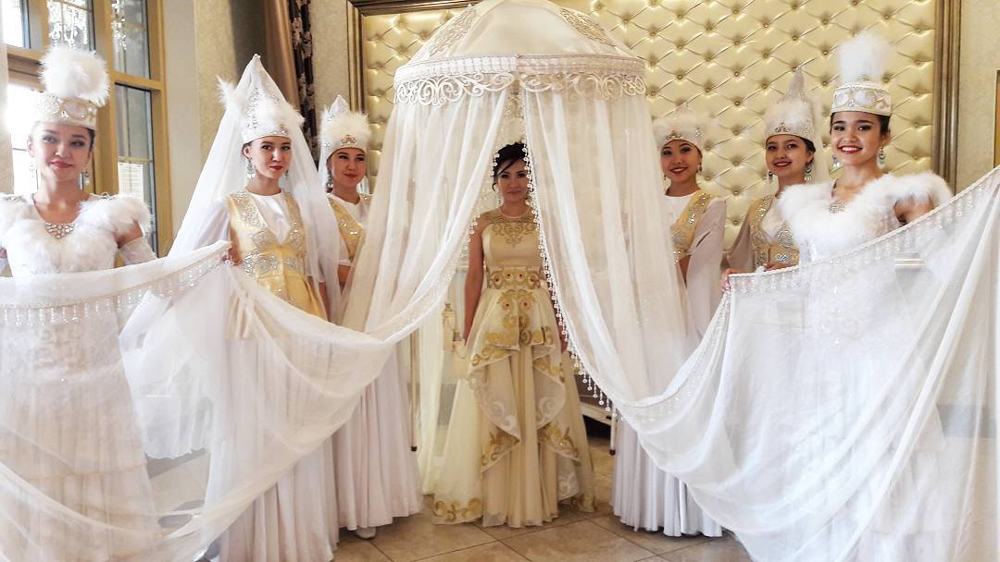
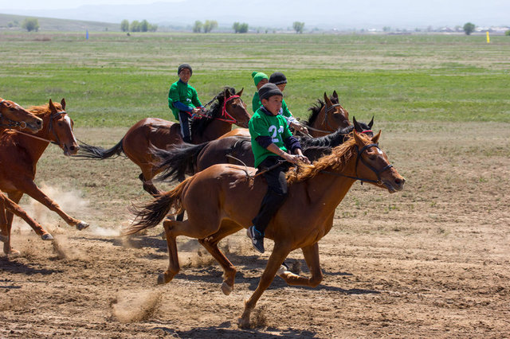
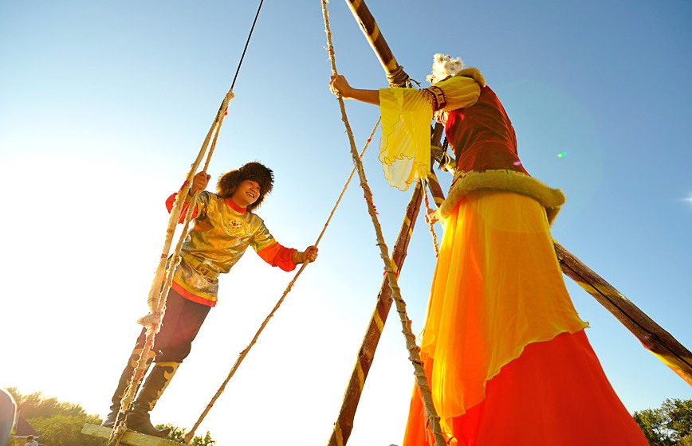
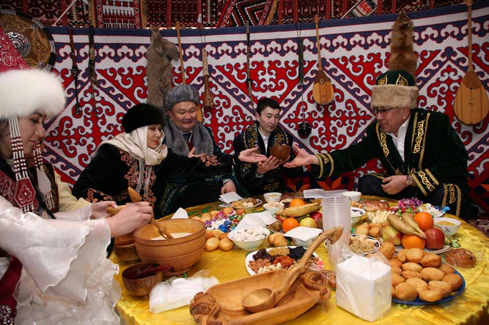
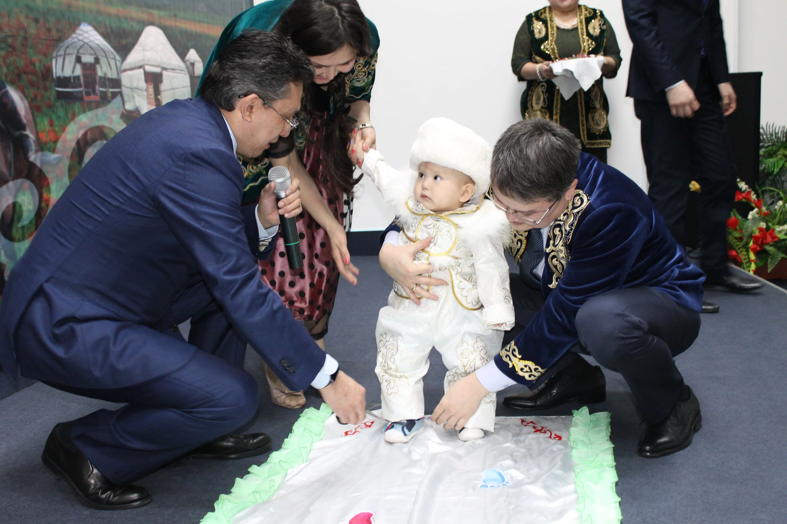
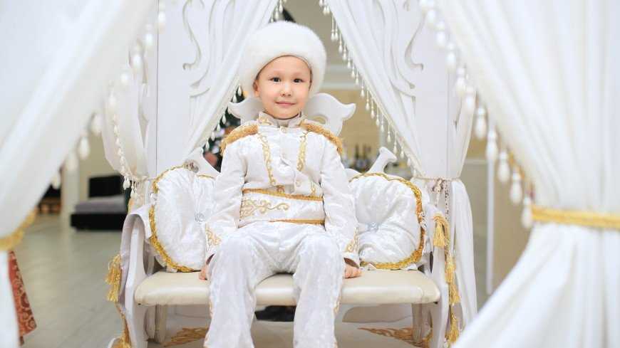

Традиции и обычаи

Кыз Узату той
Настоящая казахская свадьба - многоэтапное дело, которое невозможно
уместить в один или два дня. От первого неофициального решения
Читать дальше...

Байга
Один из древнейших и популярнейших видов конных скачек у многих тюркских
народов, таких как: алтайцы, киргизы, башкиры
Читать дальше...

Алты бакан
Качели «Алтыбакан» («Шесть столбов») – казахская национальная игра,
включенная в Национальный список нематериального
Читать дальше...

Гостеприимство
Основной традицией казахов, со временем трансформировавшейся в особенность
национального характера, является
Читать дальше...

Тусау кесу
С самых давних пор и до сегодняшнего дня казахский народ уделял много
времени воспитанию детей. Рождение ребенка было
Читать дальше...

Обряд обрезания у мальчиков
Обрезание – берет свое начало со времен древнего Египта и Месопотамии как
религиозный обряд. Обычно обрезание
Читать дальше...
Кыз Узату той
Настоящая казахская свадьба - много этапное дело, которое
невозможно уместить в один или два дня. От первого неофициального решения поженить детей до
официального Куда тусу, казахского сватовства, могут пройти годы. Известны случаи, когда родители
принимают решение о будущей свадьбе сразу после рождения малыша или даже до рождения ребёнка.
Сейчас многие традиции соблюдаются не так строго, но проведение свадьбы остаётся сложным делом, полным обязательных требований, необязательных пожеланий и искреннего стремления отметить торжество по первому разряду.
Сейчас многие традиции соблюдаются не так строго, но проведение свадьбы остаётся сложным делом, полным обязательных требований, необязательных пожеланий и искреннего стремления отметить торжество по первому разряду.